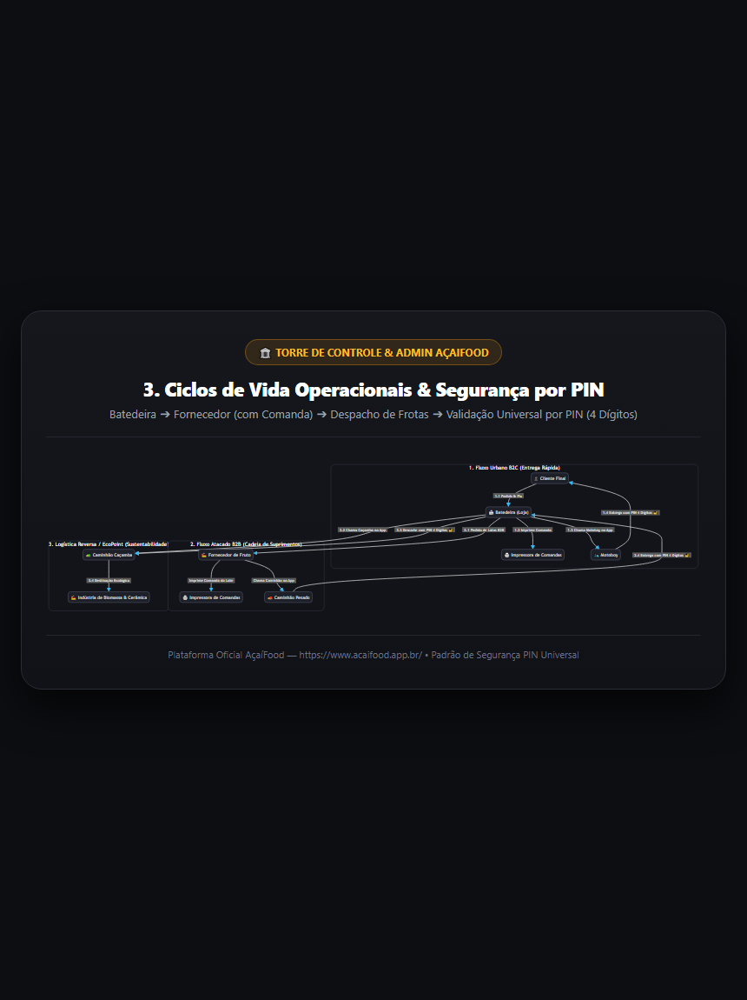

Impressão de Comandas (Loja e Fornecedor), Despacho de Frotas e Validação Universal por PIN (4 Dígitos)

[🔑 PIN 4 DÍGITOS] ➔ Saldo liberado no Cofre.
[🔑 PIN 4 DÍGITOS] ➔ Liquidação de venda e frete.
[🔑 PIN 4 DÍGITOS] ➔ Baixa oficial e créditos ESG.